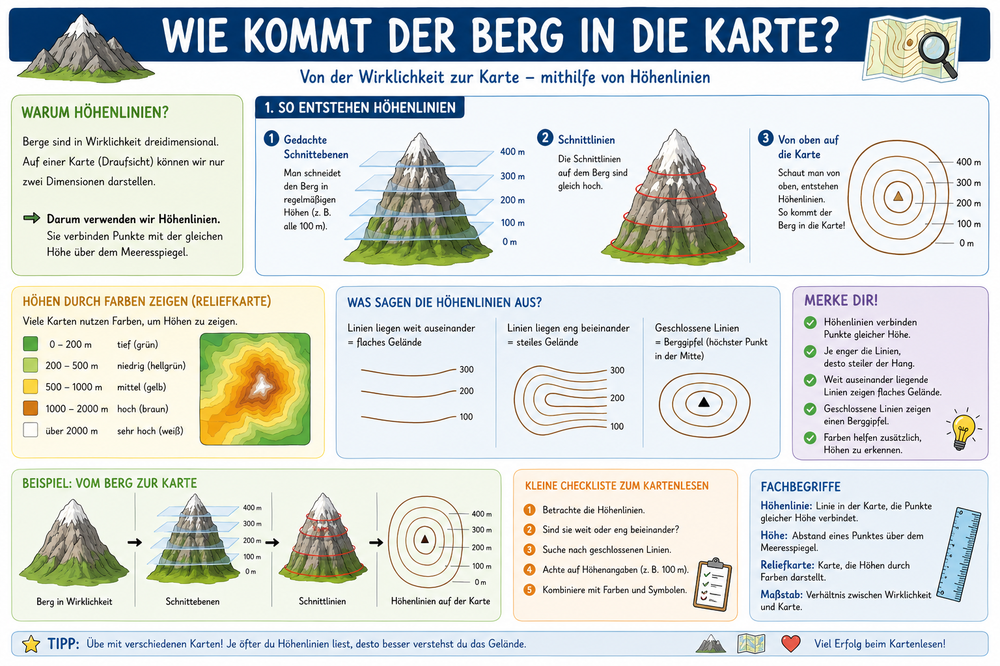

Das kannst du danach
- Erklaeren, was Hoehenlinien und Isolinien sind.
- Ablesen, ob ein Hang steil oder flach ist.
- Geschlossene Linien als Gipfelbereich deuten.
- Einfache Hoehenaufgaben mit Linienabstand loesen.
Erdkunde Klasse 5
In diesem Modul lernst du Schritt fuer Schritt, wie aus einem echten Berg eine Kartenzeichnung mit Hoehenlinien (Isolinien) wird.
Hoehenlinien verbinden Punkte gleicher Hoehe. Enge Linien bedeuten steil, weite Linien bedeuten flach.
Das Thema passt zum Kompetenzbereich Orientierung im Raum und Kartenarbeit. Du lernst, wie Relief auf Karten dargestellt wird und wie man diese Darstellungen auswertet.
Diese Grafik zeigt den gesamten Weg von der 3D-Landschaft zur 2D-Karte mit Hoehenlinien, Farbtoenen und Hoehenangaben.

Isolinien verbinden Punkte mit gleichem Wert. Bei Hoehenlinien ist das die gleiche Hoehe ueber dem Meeresspiegel. Veraendere den Linienabstand und beobachte die Wirkung.
Aufgabe wird geladen...
Aufgabe wird geladen...
Aufgabe wird geladen...
Aufgabe wird geladen...
Der Test mischt Grundlagen, Deutung und Rechenaufgaben zu Hoehenlinien. Nach jeder Antwort bekommst du eine kurze Begruendung.
Punkte: 0 / 10
Test noch nicht gestartet.